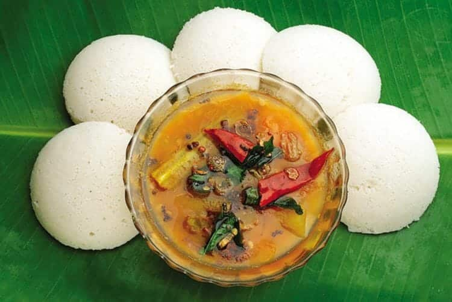

Sambar Idli

Description
Sambar Idli is a delightful South Indian dish that combines soft, savory idlis with flavorful sambar stew.
Idlis, made from fermented rice and lentil batter, soak up the tangy and aromatic flavors of the lentil-based
sambar, creating a harmonious blend of textures and tastes. The sambar, rich with pigeon peas, tamarind,
vegetables, and spices, adds depth and complexity to the dish, making it a hearty and satisfying meal or snack
enjoyed across South India. Garnished with cilantro and sometimes ghee, Sambar Idli offers a comforting and
balanced culinary experience, showcasing the essence of South Indian cuisine.
Preparation
- In a bowl take ¼ cup each of tuvar dal (arhar dal or pigeon pea lentils) and masoor dal (red lentils). You
can also just take overall ½ cup of tuvar dal.
As you see in the photo below pigeon pea lentils are yellow colored and they are split and without husk. The
red lentils or orange colored lentils are also husked and split.
- Rinse the lentils well in fresh water and then add them in a 2 litre pressure cooker.
You can also cook these lentils on stove top in pan or in an instant pot. If cooking in a pan, I suggest to
soak the lentils in enough water for at least half an hour so that they cook faster.
- Add ¼ tsp turmeric powder and 1.25 to 1.5 cups of water in the pressure cooker.
- Pressure cook the lentils till they are soft, mushy and well cooked for about 7 to 8 whistles or 11 to 12
minutes on a medium flame.
- Open the lid once the pressure settles down naturally in the cooker. The lentils should have softened very
well, so that they can be easily mashed.
- Mash the lentils with a spoon or wired whisk and set aside.
- Take 1 tablespoon tamarind and soak it in ¼ to ⅓ hot or warm water for 20 to 30 minutes.
TIP: If you don’t have dried tamarind then you can use about ½ tablespoons of packaged tamarind paste or as
needed.
- Later squeeze the tamarind in the water and you get the tamarind pulp. You can even strain tamarind pulp and
keep aside.
- n a heavy small frying pan, heat 2 teaspoons oil. Keep the flame to its lowest. First add mustard seeds. Mix
and stir.
You can use any neutral flavored oil.
- Then add the remaining whole spices – coriander seeds, fenugreek seeds, cumin seeds, black pepper, chana dal
(husked and split bengal gram). Mix and stir.
- Immediately add 5 Kashmiri red chillies or 5 byadagi chilies (broken and seeds removed).
- Next add curry leaves.
- Mix very well. On a low heat, stir non-stop and roast till the spices become aromatic. Your kitchen will
smell fragrant while roasting these spices. Ensure that you don’t burn the spices.
Once the spices are roasted well, you can also add 2 to 3 tablespoons fresh coconut or desiccated coconut.
Mix the coconut and roast for 1 to 2 minutes and switch off the flame.
- Keep aside to cool.
- Once the spices cool, grind them to a fine powder in a dry grinder or coffee grinder.
- Keep the tiffin sambar powder aside.
Steps
- Rinse and peel the veggies. Chop them and keep aside. You can use a mix of drumsticks, carrots, pearl onions, yellow pumpkin, radish, green beans, ash gourd, potatoes, brinjal (eggplant), okra etc.
While cooking just remember to add the veggies that take more time to cook first and later add the veggies which take less time to cook.
- For brinjals, chop them and add them to water so that no discoloration occurs.
- In a pot, heat 2 tablespoons oil first. Keep flame to a low or medium-low flame. Add the mustard seeds and let them crackle.
- Then add the urad dal (husked and split black gram).
- Let the urad dal turn into a maroonish color.
- Then add quartered onions or pearl onions (whole or halved), curry leaves and asafoetida (hing).
- Stir and saute for 2 minutes on a medium-low flame
- Saute till the onions soften a bit.
- Then add the chopped tomatoes.
- Saute tomatoes for 4 to 5 minutes on a medium-low flame.
- Next add veggies which take more time to cook like carrots, beans, potatoes, drumsticks etc.
- Sauté for 4 to 5 minutes on medium-low flame stirring often.
- Then add remaining quick-cooking veggies like brinjals, ladyfingers (okra), pumpkin etc now. Mix well.
- Add the prepared tamarind pulp.
- Pour water.
- Add salt as per taste and mix well.
- Cover the pan and simmer on a medium-low flame until the raw aroma of the tamarind goes away and the veggies are almost cooked. If they are undercooked, then continue to simmer till they soften.
- The veggies should be almost cooked before you proceed to another step.
- Add the ground sambar masala powder which we have already prepared earlier.
- Mix very well.
- Add the mashed dal.
- Mix again very well. Also add 1 cup water or more to get the consistency you want.
The tiffin sambar served in the hotels is usually thinner. For idli, dosa and medu vada you can keep the sambar having a medium to thin consistency. For serving with rice, keep the tiffin sambar slightly thick.
- Stir and simmer without lid for about 6 to 7 minutes or till it comes to a boil. Then switch off the flame. Stir at intervals so that the lentils do not stick at the bottom of pan.
- Meanwhile when you keep the dal for pressure cooking, you can steam idli. Both small-sized mini idli or large idli goes well with this tiffin sambar.
- While serving place the idli in a serving bowl. Pour sambar. Garnish with some coriander leaves. You can even drizzle a bit of ghee on top. Serve idli sambar hot.
This tiffin sambar can also be served hot with idli, medu vada, uttapam or masala dosa. You can also enjoy with steamed rice.